A working method for scientists developing software with AI coding agents
Research software outlives the conversation that produced it. Someone still needs to know why an assumption was made, what a change was checked against, and what remains uncertain. Cairn gives that information a home in the repository, so work can continue across sessions, tools, and collaborators.
The repository keeps the record
Cairn is a set of files and local tools, not a hosted service. It brings together project rules that agents read, written proposals, review, testing, and a record of decisions kept in git beside the code. It works with different agent tools and programming languages.

The process grows with the change
Before anything is written, a change is sorted into one of three lanes. A typo or a one-line fix is just the change and its test, with no code review. Only a new feature, a contract change or a high-risk surface gets the full path: a proposal, a review, a decision by the human Maintainer, and a plan.

One review at every stage
Every review is by someone who did not write the work. A fresh session of the same AI tool is enough; the Maintainer can ask for another model or a person when a change warrants it. Each review records who wrote it and the evidence it considered.

Agents write for the person who decides
A Maintainer cannot review what they cannot follow. Cairn ships a short writing standard, Cairn Plain Language, for what an agent says to you: the conclusion first, what was measured kept apart from what was assumed, and a plain account of what it did not check.
A toy example: asking for a new feature
This is an illustration, not a record from a real project. You ask your agent: “Check the model's simulated streamflow against the stream-gauge records, so we can see how well it matches reality.” That is a new capability, with a new dataset, so it takes the full path. Here is what happens, and who does it:
-
1 · Proposal · the agent, before any codeWrites one short file. Why: validation is done by hand in a notebook today, so it is rarely rerun after the model changes. The change: read daily discharge records for each gauge, match each gauge to its model stream reach, and report the fit (Nash–Sutcliffe efficiency and percent bias) for each one. The assumptions, stated: gauges report cubic feet per second and the model cubic metres per second; missing days are skipped, never treated as zero. Rejected: keeping the notebook, because its results cannot be repeated after each change.
-
2 · Review · a fresh agent session that did not write itAsks: “Gauge records flag days as ice-affected or estimated. Are those compared as if they were measured?” The author revises: flagged days are left out of the fit, and the report says how many were left out.
-
3 · Decision · youAccept, and add one requirement from your own experience: the report also lists the date range each gauge covers, so a short record is never mistaken for a good fit.
-
4 · Plan · the agent, then a fresh reviewerSplits the work into steps (reader, matching, statistics, report) with how each will be checked. The reviewer confirms the plan delivers what you accepted, including your added requirement.
-
5 · Build · the agentWrites each piece with its tests and documentation. Before trusting the fit statistics on real gauges, it runs them on made-up series whose scores the formulas fix in advance: a series compared with itself must score an efficiency of exactly 1 and a bias of 0, and a flat line at the observed average must score exactly 0. (No real model scores 1; these inputs test the arithmetic, not the model.) A gauge reading of 35.3147 cubic feet per second must arrive as 1.0 cubic metre per second. Then it skips the unit conversion on purpose and records that the check fails, which shows the check can catch that mistake.
-
6 · Code review · a reviewer who did not build itTries to break it with a record that has gaps, a record that starts before the model run, and two gauges on one reach, and records what was tried and what happened.
Afterwards your repository holds the new code and its tests, plus the proposal, the review, your decision and the plan, all in git. Next spring, when a colleague asks “why are ice-affected days left out of the fit?”, the answer is in the review: who raised it, and why. It is a file they can open, not a chat that has gone.
A small fix skips most of this: a typo or a one-line bug is just the change and its test, with no code review. See real files from a small change.
Passing tests are not scientific validity
A passing test does not establish that a model represents the right physical process. When a change touches a scientific assumption, such as a governing equation, a unit or sign convention, a boundary condition or a parameter default, its proposal names one check whose expected answer does not come from the code, or from a test written from the same understanding. The implementer then makes the feared mistake on purpose and records that the check fails.

Get started

Try it on a throwaway repo
One small change, one human, one AI agent, with a real install of the smallest profile.
Choose how much to adopt
Read the method as a handbook, or install it with the profile that fits your project.
Read the method
The lifecycle, review, roles, session continuity, and the research behind them.
Status and limits
Cairn is in active development. It was developed by Anthony Kendall through work on two research-software projects, and this repository uses the method for its own development. Those are deployments by the same maintainer, not independent adoptions. There is no controlled study showing that Cairn improves development outcomes, and no outside project has run the install yet. Its benefits and costs need to be judged in use; if you try it, we would like to hear how it went.
AI coding agents can read files, run commands, and send repository content to their model provider. Keep secrets, credentials, embargoed data and unpublished results out of agent-readable material, and read the security statement before running agents on sensitive work.